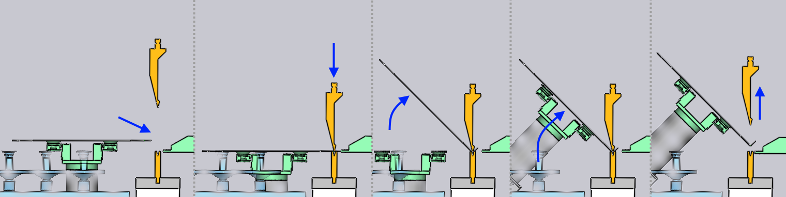

Buigen
Buigstrategie
U kunt de Bending-strategie kiezen in dit gedeelte van het venster Strategie.
-
De strategie Steunpunt + Vacuüm is de standaard strategie. Tijdens het buigen ondersteunt de grijper het stuk en het vacuüm blijft aan en houdt het stuk vast. De grijper voert een zorgvuldig berekende baan uit die synchroon loopt met de positie van de balk, en volgt de flens van het stuk terwijl dit omhoog buigt.
-
Bij sommige soorten matrijzen, of bij bepaalde buigprocessen, is de regelaar niet in staat om de BendMaster het stuktraject nauwkeurig te laten volgen en de zuigergrijper kan tijdens het buigen slippen of grip verliezen. In deze situaties is de strategie Geen steunpunt handig. Zodra de balk is neergelaten en het stuk heeft vastgeklemd,deel laat de grijper los en wacht tot de buiging is voltooid voordat hij omhoog beweegt en het stuk opnieuw grijpt:
 -
De strategie Geen vacuüm zit tussen deze twee strategieën in. De grijper laat het stukvacuüm af, maar volgt de balk en zwenkt omhoog om de beweging van het stuk te volgen. Met deze strategie blijft de grijper het stuk ondersteunen (vooral als de stukstrekking groot is), maar wordt wat slippen tussen de zwenkbeweging van het stuk en de robotbewegingen getolereerd omdat het vacuüm uit staat.
Een omgrijping toevoegen
Een extra optie die beschikbaar is in dit gedeelte van het venster Strategie is de mogelijkheid om een omgrijping toe te voegen. Door op de knop Omgrijpen toevoegen te klikken, wordt een menu geopend, zoals hiernaast te zien.Hiermee kunt u ervoor kiezen om het stuk om te grijpen (de positie en oriëntatie van de grijper wijzigen of zelfs het vasthoudvlak waaraan het stuk wordt vastgehouden).Deze omgrijp-opties worden nader toegelicht in het gedeelte Omgrijpen.